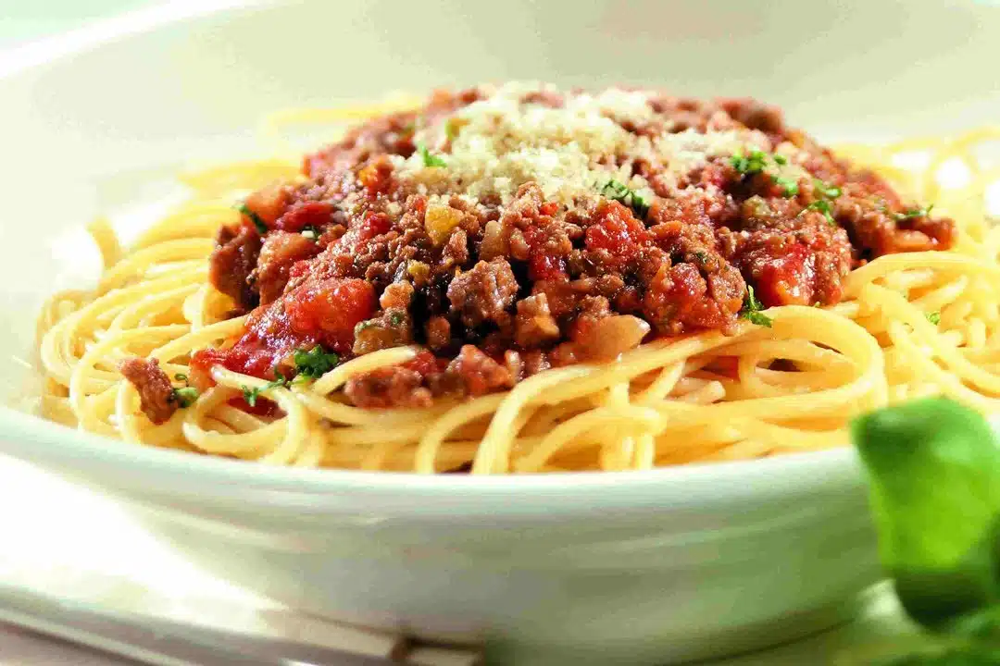

Fideos caseros con salsa bolognesa
Ingredientes
- 400 g de harina 0000
- 4 huevos
- 1 cucharadita de sal
- Agua (si es necesario para la masa)
- 500 g de carne picada
- 1 cebolla y 2 dientes de ajo
- 500 ml de salsa de tomate
- 1 cucharadita de orégano y una hoja de laurel
- Sal, pimienta y aceite de oliva
- Queso rallado para servir
Preparación
- Hacer un volcán con la harina, agregar los huevos en el centro y mezclar hasta formar una masa. Amasar bien y dejar descansar tapada.
- Estirar la masa con palo o pastalinda y cortar los fideos. Hervir en agua con sal durante 2-3 minutos.
- Para la salsa: saltear la cebolla y el ajo picados, luego agregar la carne y dorar.
- Incorporar la salsa de tomate, orégano, laurel, sal y pimienta. Cocinar 20 minutos.
- Servir los fideos con la salsa por encima y espolvorear con queso rallado.
🍝 Consejo Paulinesco: podés congelar la salsa en porciones. ¡Ideal para salvarte cualquier noche!